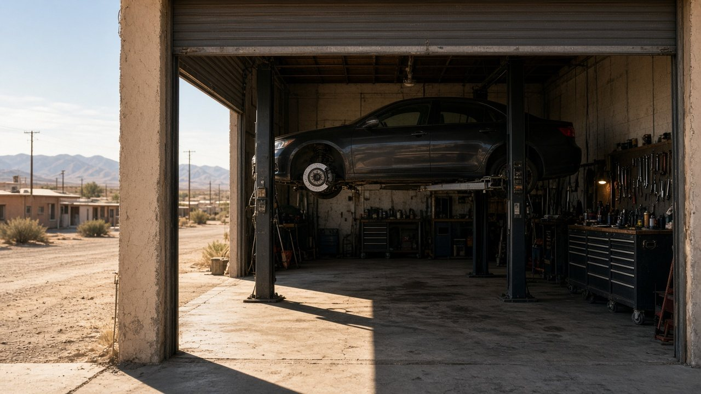

Father-and-son owned and operated auto repair near downtown Henderson. Licensed, insured and certified with the State of Nevada and the DMV.

Sample photoCan't make it during the day? There's an after-hours car and key drop.
Leave the car at 150 S Fourth St.
Use the after-hours key drop.
Email or text what the car is doing.
My Maintenance Man is a vehicle inspection station, licensed, insured and certified with the State of Nevada and the DMV.
General repair and maintenance, from brakes to diagnostics.
When Henderson neighbors ask on Nextdoor, this shop's name keeps coming up.
4.9 on Google (83 reviews) · 21 Yelp reviews · 19 Nextdoor recommendations
Please confirm which Facebook page is current: Nextdoor and Google link to different pages.
Mon–Fri
8 AM–4:30 PM
Mon–Fri
8 AM–5 PM
Saturday & Sunday closed
Listings vary. Please confirm the weekday closing time.